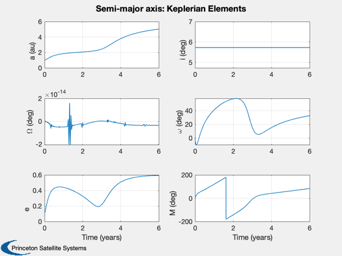
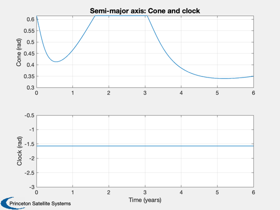
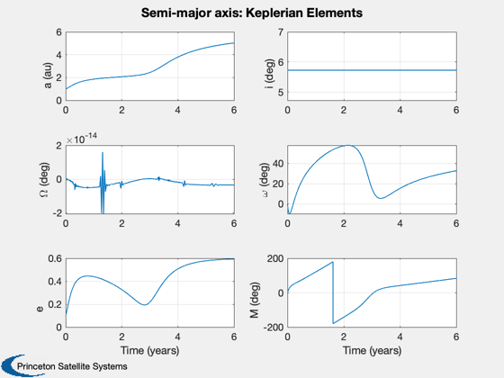
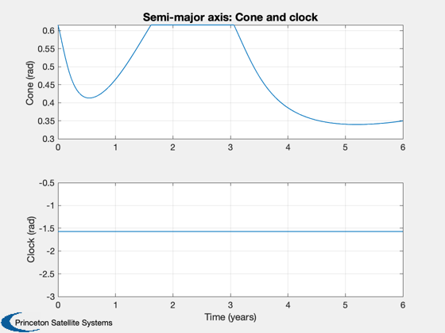
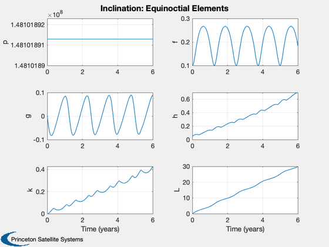
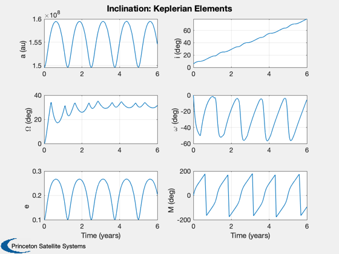
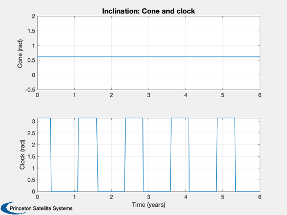
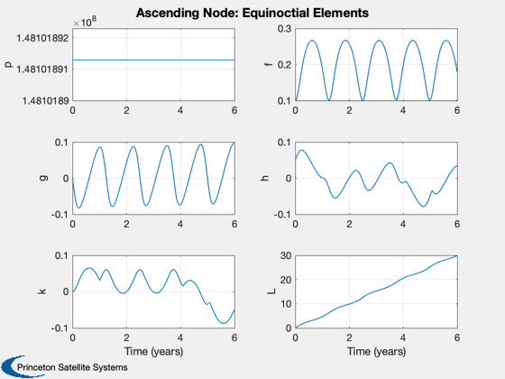
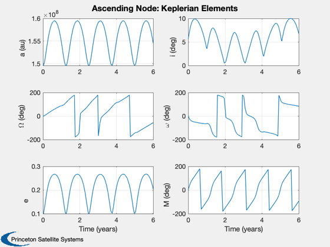
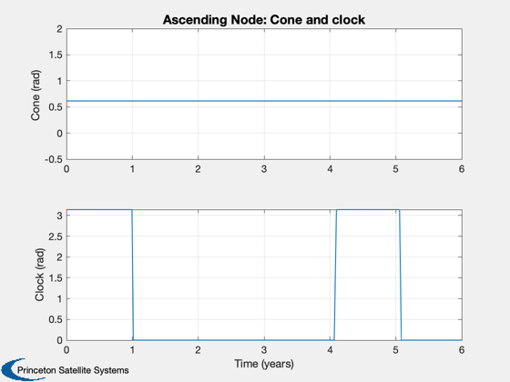

Demonstrate locally optimal sail trajectories. Uses equinoctial elements.
Shows inclination and semi-major axis control.
------------------------------------------------------------------------ See also LocallyOptimalConeClock3D, RHS3DOrbit, Constant, InformDlg, Plot2D, ElToMEq, MEqToEl ------------------------------------------------------------------------
Contents
%------------------------------------------------------------------------------- % Copyright (c) 2005-2006 Princeton Satellite Systems, Inc. % All rights reserved. % Since version 7. %-------------------------------------------------------------------------------
Setup
% Constants %---------- aU = Constant('au'); c = Constant('speed of light'); secInYear = 365.25*86400; % This assumes 100 kg mass, 100x100 m sail %----------------------------------------- d.accel = 1e4*1367*aU^2*1e-6/(c*100); % km/sec^2 d.coneClockFun = 'LocallyOptimalConeClock3D'; rHSFun = 'RHS3DOrbit'; % Heliocentric system %--------------------- d.mu = Constant('mu sun'); el = [aU;0.1;0;0;0.1;0]; % End time is 4 years %-------------------- tEnd = 6*secInYear; % (s) % Dynamics function %------------------ d.coordType = 'equinoctial'; % 'cartesian' d.rhoS = 1.0; d.rhoAD = 0.0; d.rhoR = 0.0; d.ascendingNode = 0.0;
Semi-major axis test
d.maneuverType = 'semi-major axis'; d.dirFlag = -1; % Initial orbit %-------------- x0 = ElToMEq( el, d.mu ); % Integration (ode113) parameters %-------------------------------- oDEOptions = odeset( 'abstol', 1e-13, 'reltol', 1e-13, 'events', 'off' ); % Propagate the trajectory %------------------------- hDlg = InformDlg( 'Integrating...', 'LocallyOptimalTrajectories' ); [t, x] = ode113( rHSFun, [0, tEnd], x0, oDEOptions, d ); close(hDlg); % Transpose for plotting %----------------------- x = x'; t = t'/secInYear; % Get the cone and clock angles %------------------------------ [a, cone, clock] = LocallyOptimalConeClock3D( x, 'equinoctial', d ); % Plot the equinoctial elements %------------------------------ Plot2D( t, x, 'Time (years)', {'p' 'f' 'g' 'h' 'k' 'L' },... 'Semi-major axis: Equinoctial Elements',[],{},{},2) x = MEqToEl( x, d.mu ); x(1,:) = x(1,:)/aU; x([2 3 4 6],:) = x([2 3 4 6],:)*180/pi; Plot2D( t, x, 'Time (years)', {'a (au)' 'i (deg)' '\Omega (deg)' '\omega (deg)' 'e' 'M (deg)' },... 'Semi-major axis: Keplerian Elements',[],{},{},2) Plot2D( t, [cone;clock], 'Time (years)', {'Cone (rad)' 'Clock (rad)' }, 'Semi-major axis: Cone and clock')
  
  Now do an inclination change
d.maneuverType = 'inclination'; d.dirFlag = -1; d.ascendingNode = 0; x0 = ElToMEq( el, d.mu ); oDEOptions = odeset( 'abstol', 1e-4, 'reltol', 1e-4, 'events', 'off' ); % Propagate the trajectory %------------------------- [t, x] = ode113( rHSFun, [0, tEnd], x0, oDEOptions, d ); % Transpose for plotting %----------------------- x = x'; t = t'/secInYear; % Get the cone and clock angles %------------------------------ [a, cone, clock] = LocallyOptimalConeClock3D( x, 'equinoctial', d ); % Plot the equinoctial elements %------------------------------ Plot2D( t, x, 'Time (years)', {'p' 'f' 'g' 'h' 'k' 'L' },... 'Inclination: Equinoctial Elements',[],{},{},2) x = MEqToEl( x, d.mu ); x([2 3 4 6],:) = x([2 3 4 6],:)*180/pi; Plot2D( t, x, 'Time (years)', {'a (au)' 'i (deg)' '\Omega (deg)' '\omega (deg)' 'e' 'M (deg)' },... 'Inclination: Keplerian Elements',[],{},{},2) Plot2D( t, [cone;clock], 'Time (years)', {'Cone (rad)' 'Clock (rad)' }, 'Inclination: Cone and clock')  
Now ascending node change
d.maneuverType = 'ascending node'; d.dirFlag = -1; d.ascendingNode = 0; x0 = ElToMEq( el, d.mu ); oDEOptions = odeset( 'abstol', 1e-4, 'reltol', 1e-4, 'events', 'off' ); % Propagate the trajectory %------------------------- [t, x] = ode113( rHSFun, [0, tEnd], x0, oDEOptions, d ); % Transpose for plotting %----------------------- x = x'; t = t'/secInYear; % Get the cone and clock angles %------------------------------ [a, cone, clock] = LocallyOptimalConeClock3D( x, 'equinoctial', d ); % Plot the equinoctial elements %------------------------------ Plot2D( t, x, 'Time (years)', {'p' 'f' 'g' 'h' 'k' 'L' },... 'Ascending Node: Equinoctial Elements',[],{},{},2) x = MEqToEl( x, d.mu ); x([2 3 4 6],:) = x([2 3 4 6],:)*180/pi; Plot2D( t, x, 'Time (years)', {'a (au)' 'i (deg)' '\Omega (deg)' '\omega (deg)' 'e' 'M (deg)' },... 'Ascending Node: Keplerian Elements',[],{},{},2) Plot2D( t, [cone;clock], 'Time (years)', {'Cone (rad)' 'Clock (rad)' }, 'Ascending Node: Cone and clock') %-------------------------------------- % PSS internal file version information %--------------------------------------  